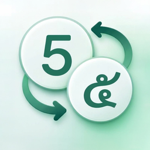

Easy Sarabun
แปลงเลขไทย ⇄ อารบิก โดยคงฟอร์แมตเดิม
โหมดการแปลง
1 2 3 → ๑ ๒ ๓
ลากไฟล์เอกสารมาวางที่นี่
Word · PowerPoint · Excel · ODF · RTF · TXT
หรือคลิกเพื่อเลือกไฟล์ (ได้หลายไฟล์)
วิธีใช้ และคำถามที่พบบ่อย
วิธีใช้: แปลงไฟล์เอกสารยังไง?
แปลงได้ 3 ขั้นตอนง่าย ๆ:
- ลากไฟล์มาวางที่ช่อง หรือคลิกเลือกไฟล์ (หลายไฟล์ได้)
- เลือกโหมดการแปลง: อารบิก ➔ ไทย หรือ ไทย ➔ อารบิก
- กดปุ่ม "แปลงไฟล์" แล้วไฟล์ที่แปลงแล้วจะถูกดาวน์โหลดอัตโนมัติ
ไฟล์ต้นฉบับจะไม่ถูกแก้ไข และไฟล์ใหม่จะถูกสร้างข้าง ๆ โดยมีคำว่า "_thai" หรือ "_arabic" ต่อท้ายชื่อ
ต้องติดตั้งโปรแกรมไหม?
ไม่ต้องครับ เว็บนี้แปลงไฟล์ได้ออนไลน์ในเบราว์เซอร์ ใช้ได้ทันทีโดยไม่ต้องติดตั้งอะไร และใช้ได้ทั้งบนคอมพิวเตอร์ แท็บเล็ต และมือถือ
ไฟล์ของฉันถูกอัปโหลดหรือส่งไปที่ไหนไหม? ปลอดภัยไหม?
ปลอดภัย 100% ครับ ไฟล์ของคุณจะถูกประมวลผลในเครื่องของคุณเองภายในเบราว์เซอร์เท่านั้น ไม่มีการอัปโหลด ไปยังเซิร์ฟเวอร์ใด ๆ เลย
รองรับไฟล์ประเภทไหนบ้าง?
รองรับเอกสารยอดนิยมหลากหลายชนิด:
- Word: .docx, .docm
- PowerPoint: .pptx, .pptm
- Excel: .xlsx, .xlsm
- ODF: .odt, .ods, .odp
- อื่น ๆ: .rtf, .txt, .md, .csv, .html
หมายเหตุ: ไฟล์รูปแบบเก่าแบบ .doc / .xls / .ppt (ไบนารี) ไม่รองรับบนเว็บ ให้แปลงเป็น .docx ก่อน หรือใช้เวอร์ชันเดสก์ท็อป
การแปลงจะคงรูปแบบเอกสารเดิมไหม?
คงรูปแบบเดิมครับ เฉพาะตัวเลขเท่านั้นที่ถูกเปลี่ยน (0-9 ⇄ ๐-๙) ฟอนต์ สี ขนาด การจัดหน้า การเว้นวรรค ฯลฯ คงไว้เหมือนเดิมทุกอย่าง
อยากได้ฟีเจอร์แปลงข้อความที่ไฮไลต์ใน Word / จากคลิปบอร์ด
ฟีเจอร์แปลงข้อความที่ไฮไลต์ใน Microsoft Word และแปลงจากคลิปบอร์ด มีให้ใช้งานใน เวอร์ชันเดสก์ท็อปสำหรับ Windows เท่านั้น (เพราะต้องเข้าถึงระบบคลิปบอร์ดและ Word โดยตรง) กดปุ่มดาวน์โหลดด้านล่างเพื่อติดตั้งครับ